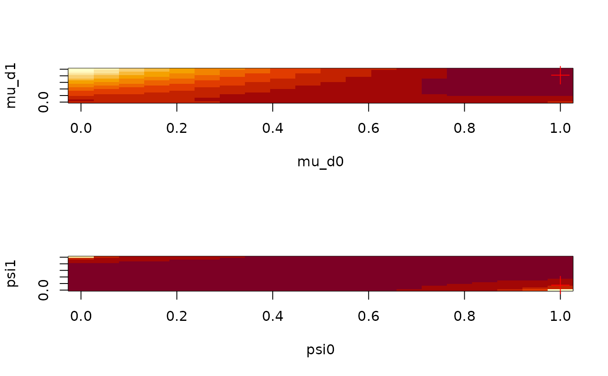

Multiavariate plot (surface)
plot_multivariate( fun, params, domain, sets, nlevels = 20, args = list(), plotfun = graphics::image, plot = TRUE, postplot = function(params, res) { points(params, cex = 2, pch = 3, col = "red") }, mfrow = NULL, ... )
| fun | A function that receives 2 or more parameters and returns a single number. |
|---|---|
| params | Numeric vector with the default parameters. |
| domain | (optional) Named list with as many elements as parameters. Specifies the domain of the function. |
| sets | (optional) Character matrix of size |
| nlevels | Integer. Number of levels. |
| args | List of named arguments to be passed to |
| plotfun | Function that will be used to plot |
| plot | Logical. When |
| postplot | Function to be called after |
| mfrow | Passed to graphics::par. |
| ... | Further arguments passed to |
# Example: A model with less parameters set.seed(1231) x <- raphylo(20) ans <- aphylo_mcmc( x ~ psi + mu_d + mu_s, control = list(nsteps = 1e3, burnin = 0) )#> Warning: While using multiple chains, a single initial point has been passed via `initial`: c(0.1, 0.1, 0.9, 0.9, 0.1, 0.1). The values will be recycled. Ideally you would want to start each chain from different locations.#> Warning: This function should not be used in a context other than the argument `conv_checker` in `MCMC`.#>#># Creating the multivariate plot (using by default image) plot_multivariate( function(...) { ans$fun(unlist(list(...)), priors = ans$priors, dat = ans$dat, verb_ans = FALSE) }, sets = matrix(c("mu_d0", "mu_d1", "psi0", "psi1"), ncol=2), params = ans$par )